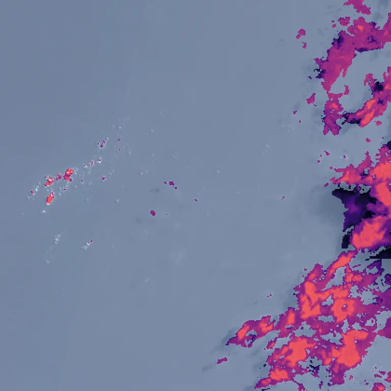

Benchmark / Use cases / Cloud optical thickness / Results / T44PNB-20210704
T44PNB-20210704

Optical thickness retrieved by Clouds Decoded, from 0.1 in black to 100 in pale yellow on a log scale, over the true-colour crop.
Sample
| surface | ocean |
|---|---|
| regime | few small clouds |
| product | S2B_MSIL1C_20210704T045659_N0500_R119_T44PNB_20230121T162652 |
| col_off | 1140 |
| row_off | 2340 |
Compression ratio and optical thickness
Each point is one level of a codec, named when you point at it, on this sample.
GeoZL PIVCOGeoZL PFORJPEG XLgeorvq